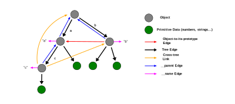
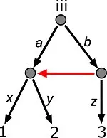
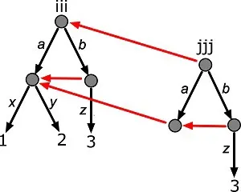

Here is a precise definition of the prototype tree structure.
1) Start with a JavaScript tree of the kind that is expressable in JSON. Such a structure lacks prototypical inheritance, except from the Javascript core items: Object.prototype and Array.prototype.
2) Next, allow prototype chains in the tree. This places another sort of graph over the first. It has the same nodes as the original tree, but adds a new set of edges - edges which join nodes A and B if B is the prototype of A. This second graph is acyclic too, but is rarely connected.
3) Introduce a third kind of edge into the data structure: the "cross-tree link", which, as the name implies, is a directed edge from any object in the tree to any other. These, like the tree edges, are represented by JavaScript's object-to-own-property edges. If they were simply thrown into the mix of possible edges, the tree restriction would vanish. The instantiation algorithm depends on tree structure, so this would not work. We need a scheme for keeping track of what type (tree or cross-tree) each edge is. This is the scheme: Add two special properties to nodes, <node>.__parent, and <node>.__name. Whenever there is a tree-edge from node A to node B labeled P (ie A.P === B), then set B.__parent = A and B.__name = P. So, these __parent and __name properties effectively pick out which edges are tree edges and which are cross-tree links. They also ease tree navigation. Here is a picture:
In the picture, tree edges A.P = B are those which have __parent edges running the other way, and where B.__name === P. Now that the mechanism is present to pick out tree edges, cross tree links can be introduced simply via A.P = B for any two nodes A, B in the tree.
The algorithm is specified in detail below, but understanding this level of detail is not required to make use of the operation in coding; in practice, one might say, "it does the right thing".
Let T' = T.instantiate(). Then T' is a treewise copy of T, but initially omits its atomic-valued properties, which T' will acquire by inheritance. T' also has the same prototype structure as T, except that chains in T' are anchored back in T. The exact situation is this: consider corresponding nodes N and N' in T and T', that is, nodes appearing at the same paths from the roots of T and T'. Now consider the prototypes P and P' of N and N', that is, P and P' where P=Object.getPrototypeOf(N) and P'=Object.getPrototypeOf(N'). There are two cases. First, P might lie within T. Then P' is defined to be the corresponding node to P, treewise (ie the one at the same path). Second, P might lie outside of the tree T. Then P' is set to N itself. This is what I mean when I say that prototype chains in T' are anchored in T. If you follow a prototype chain C' in T', it will pass through nodes at the same paths as those of the corresponding chain C in T, as long as it is within the tree, but where it exits the tree, then it is anchored back over in T at the node in T from which the exit node in T' was copied.
There is one more step in the algorithm. Consider again the case where P, the prototype of N, lies within T. Then, as described above, N' will inherit from P', not N. In this case, the algorithm specifies that the own atomic properties of N be copied to N', since otherwise they would be, in a sense, lost.
Here is a simple example. iii is the initial tree.
Then after,
jjj = iii.instantiate(); jjj.a.y = 4;
we have:
So, eg, jjj.b.x === 1, since jjj.b inherits from jjj.a, which in turn inherits from iii.a. Note that jjj.b.z has been copied from iii.b.z, by the last-mentioned step of the algorithm mentioned above.
Here is the implementation.
Until now, one aspect of the implementation has been supressed for simplicity of exposition, but it is time to correct this. Prototype trees as described so far contain interior nodes which either inherit prototype-wise from elsewhere in the tree, from components, or are basic objects {}, or arrays []. This is not quite right. Instead of using plain object and arrays, we instead introduce these prototypes:
const ObjectNode = {};
const ArrayNode = [];
With these constructors:
ObjectNode.mk = function () {return Object.create(pj.ObjectNode)}
ArrayNode.mk = function () {return Object.create(pj.ArrayNode)}
This means that we can define tree operations on ObjectNode and ArrayNode without polluting the basic JavaScript name spaces Object.prototype and Array.prototype. Such pollution would affect all JavaScript objects and arrays, not just the ones used in the Kingdom of Pattern implementation.